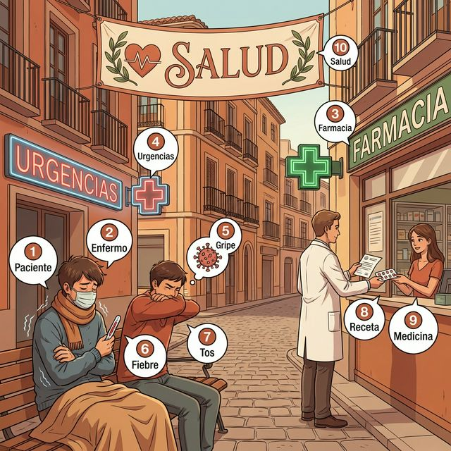

¡Hola de nuevo! Since you've mastered the basics, it's time to dive deeper into our well-being. Knowing how to describe symptoms and understand healthcare advice is crucial for living or traveling in a Spanish-speaking country. In this chapter, we will refine our medical vocabulary and master the "Gustar-like" verb doler.
한국어 번역:
다시 만나 반가워요! 기초를 닦았으니 이제 건강에 대해 더 깊이 알아볼 시간입니다. 증상을 설명하고 의료 조언을 이해하는 것은 스페인어권 국가에서 생활하거나 여행할 때 매우 중요합니다. 이 장에서는 의료 어휘를 다듬고 역구조 동사인 'doler'를 완벽히 익힐 것입니다.
학습 목표:
- 독감, 열, 기침 등 복잡한 건강 증상을 묘사합니다.
- 역구조 동사인 doler(아프다)의 구조를 마스터합니다.
- 지중해식 식단이 사회문화적으로 미치는 영향을 이해합니다.
- 진료 예약 및 약국 이용을 위한 필수 표현을 익힙니다.
한국어 번역:
스페인은 세계에서 장기 기증률이 가장 높은 국가 중 하나입니다. 이는 국가적인 큰 자부심의 원천이며, 공공 보건과 연대에 대한 깊은 문화적 헌신을 반영합니다.
En esta sección profundizamos en los síntomas y el sistema sanitario.
한국어 번역:
이 섹션에서는 증상과 보건 의료 시스템에 대해 더 깊이 알아봅니다.

Ready to expand your medical lexicon? Many of these words are "Cognates"—look for the English reflection in each one.
| # | Spanish | English Bridge | Korean Tip |
|---|---|---|---|
| 1 | paciente | Patient ✅ (Perfect Cognate) | 환자를 뜻하지만 '인내심 있는'이라는 뜻도 공유합니다. |
| 2 | enfermo / enferma | Infirm (weak/sick) ✅ | 아픈 상태를 뜻합니다. '인펌'이라는 영어 단어를 떠올려보세요. |
| 3 | la farmacia | Pharmacy ✅ (Perfect Cognate) | 스페인 거리에 'F' 모양 초록 간판이 보인다면 이곳입니다. |
| 4 | urgencias | Urgency ✅ | 응급실을 뜻하며, 긴급한 상황을 나타냅니다. |
| 5 | la gripe | Grip (to seize) | 몸을 꽉 쥐는 듯한 통증을 유발하는 '독감'입니다. |
| 6 | la fiebre | Febrile (feverish) ✅ | 열을 뜻하며, 영어의 fever와 어원적으로 친척입니다. |
| 7 | la tos | — | 기침을 뜻합니다. (짧지만 강한 발음) |
| 8 | la receta | Recipe / Receipt ✅ | 약국에 제출하는 '처방전' 혹은 요리 '레시피'입니다. |
| 9 | medicina | Medicine ✅ (Perfect Cognate) | 약 혹은 의학 그 자체를 뜻합니다. |
| 10 | la salud | Salubrious (healthy) / Salute ✅ | 건강을 빌며 인사(salute)하는 것에서 유래했습니다. |
✅ 표시가 있는 단어는 영어와 어원적 연결고리가 매우 강합니다.
Let's move beyond "Tengo dolor." Use these phrases to navigate a real medical situation.
실전 예문 (Practical Examples):
- ES: Necesito pedir cita con el doctor para mañana.
- KO: 내일 의사 선생님 진료 예약을 해야 해요. (EN: I need to make an appointment with the doctor for tomorrow.)
- ES: Mi madre está resfriada y tiene mucha tos.
- KO: 어머니가 감기에 걸리셔서 기침을 많이 하세요. (EN: My mother has a cold and a lot of coughing.)
- ES: ¡Cuídate!
- KO: 몸 조리 잘해! / 건강 조심해! (EN: Take care of yourself!)
doler 동사는 gustar 동사와 마찬가지로 특수한 구조를 가진 역구조 동사입니다. 문장의 주어는 사람이 아니라 통증을 유발하는 신체 부위가 됩니다. "내가 머리를 아프게 한다"가 아니라 "머리가 나에게 통증을 준다"는 방식으로 사고해야 합니다.
| Indirect Object (The Person) | Singular Body Part | Plural Body Part | Korean Meaning |
|---|---|---|---|
| me (to me) | duele | duelen | 나(는/를) 아프다 |
| te (to you) | duele | duelen | 너(는/를) 아프다 |
| le (to him/her/you-polite) | duele | duelen | 그/그녀/당신(은/을) 아프다 |
| nos (to us) | duele | duelen | 우리(는/를) 아프다 |
| os (to you all) | duele | duelen | 너희들(은/을) 아프다 |
| les (to them/you all) | duele | duelen | 그들/당신들(은/을) 아프다 |
duele, '눈들(복수)'이면 duelen이 됩니다.España se sitúa constantemente entre las naciones más saludables del mundo. ¿El secreto? La Dieta Mediterránea.
Esto no es solo una lista de alimentos; es un patrimonio cultural inmaterial reconocido por la UNESCO. Destaca el uso del aceite de oliva, verduras frescas de temporada, legumbres y pescado. Pero también se trata de cómo comen: despacio, socialmente y sin estrés. También tienen la tradición de la Siesta, que ayuda a reducir el estrés cardiovascular. ¡Incorporar un poco de la "calma" española en tu estilo de vida podría añadir años a tu vida!
한국어 번역:
스페인은 지속적으로 가장 건강한 국가 중 하나로 꼽힙니다. 그 비결은 무엇일까요? 바로 '지중해식 식단(Dieta Mediterránea)'입니다. 이는 단순한 음식 목록이 아니라 유네스코 인류 무형 문화유산으로 인정받은 것입니다. 올리브 오일, 신선한 제철 채소, 콩류, 생선을 강조합니다. 하지만 무엇을 먹느냐만큼이나 '어떻게' 먹느냐도 중요합니다. 천천히, 사교적으로, 스트레스 없이 먹는 것이 특징입니다. 또한 대도시에서는 변하고 있지만 심혈관 스트레스를 줄여주는 '시에스타(Siesta)' 전통도 있습니다. 스페인식 '여유(calma)'를 일상에 도입하는 것만으로도 수명이 늘어날 수 있습니다!
깔끔한 정렬을 위해 아래 표를 참조하여 알맞은 번호와 알파벳을 연결하세요.
| ES 단어 (Spanish) | 선택지 (Selection) |
|---|---|
| 1. Fiebre | a) Recipe / Prescription |
| 2. Gripe | b) Sick / Ill |
| 3. Receta | c) Pharmacy |
| 4. Farmacia | d) Fever |
| 5. Enfermo | e) Flu |
문맥에 맞게 doler 동사(duele/duelen)와 알맞은 간접목적대명사(me, te, le, nos, les)를 조합하세요.
다음 문장을 Spanish로 번역하세요.
Una consulta médica necesaria
Estimado doctor García, le escribo este mensaje porque no me siento bien físicamente. Desde ayer tengo mucha gripe y una fiebre muy alta (39 grados). Me duelen todos los músculos del cuerpo y tengo una tos constante que no para. Mañana iré a su clínica temprano para pedir una receta y comprar las medicinas necesarias en la farmacia de mi barrio. Muchas gracias por su atención y ayuda. Atentamente, Juan.
한국어 번역 (Korean Translation):
꼭 필요한 진료
존경하는 García 의사 선생님께, 몸 상태가 좋지 않아 이 메시지를 씁니다. 어제부터 독감이 심하고 열이 매우 높습니다(39도). 몸의 모든 근육이 아프고 기침이 끊이지 않고 계속됩니다. 내일 일찍 선생님의 병원에 가서 처방전을 받고 우리 동네 약국에서 필요한 약들을 사려고 합니다. 선생님의 관심과 도움에 정말 감사드립니다. Juan 올림.
En la farmacia (약국에서)
Situación: Sofía tiene un fuerte resfriado y entra en una farmacia en Sevilla para comprar algo que la ayude. Habla con el farmacéutico sobre sus síntomas y pide recomendaciones.
상황: 소피아는 심한 감기에 걸려 이를 치료할 약을 사러 세비야의 한 약국에 들어갑니다. 그녀는 약사에게 자신의 증상을 설명하고 약을 추천받습니다.
| Spanish | Korean |
|---|---|
| Doctor: Buenos días, Pedro. ¿Qué le pasa hoy? | Doctor: 안녕하세요, Pedro. 오늘은 어디가 불편하신가요? |
| Pedro: Buenos días, doctor. Me duele mucho la garganta. | Pedro: 안녕하세요, 선생님. 목이 너무 아파요. |
| Doctor: Entiendo. ¿Tiene usted fiebre o tos? | Doctor: 그렇군요. 열이 나거나 기침을 하시나요? |
| Pedro: Sí, tengo 38 grados y me duele el pecho. | Pedro: 네, 38도이고 가슴이 아파요. |
| Doctor: Parece que está usted resfriado. Debe descansar. | Doctor: 감기에 걸리신 것 같군요. 쉬어야 합니다. |
| Pedro: ¿Necesito tomar alguna medicina fuerte? | Pedro: 강한 약을 먹어야 하나요? |
| Doctor: Sí, aquí tiene la receta médica para la farmacia. | Doctor: 네, 여기 약국에 가져갈 처방전입니다. |
| Pedro: Muchas gracias, doctor. ¡Cuídate mucho! | Pedro: 정말 감사합니다, 선생님. 건강하세요! |
Check your progress! Can you do the following?
- [ ] Utilize doler correctly for both singular and plural body parts.
- [ ] Identify 10 high-level medical terms (gripe, fiebre, receta, etc.).
- [ ] Describe the components of the Mediterranean Diet.
- [ ] Simulate a basic conversation with a doctor.
¡Enhorabuena! Has profundizado en el conocimiento de tu cuerpo, salud y bienestar. Entender cómo funciona tu cuerpo y cómo expresar sensaciones físicas es un paso gigante hacia la fluidez y la autonomía. En el próximo capítulo, llevaremos este conocimiento más allá: exploraremos cómo describir la personalidad y el carácter para conectar mejor con los demás. ¡Hasta pronto!
한국어 번역:
축하합니다! 신체, 건강, 웰빙에 대한 지식을 심화하셨습니다. 신체가 어떻게 작동하는지 이해하고 신체적 감각을 표현하는 것은 유창함과 자율성을 향한 큰 발걸음입니다. 다음 장에서는 이 지식을 더 확장하여, 타인과 더 잘 소통하기 위해 성격과 기질을 묘사하는 방법을 탐구해 보겠습니다. 곧 만나요!
6. Práctica A: 1-d, 2-e, 3-a, 4-c, 5-b
6. Práctica B:
1. Me duele
2. Te duelen
3. Nos duele
4. Le duelen
5. Les duele
6. Práctica C:
1. ¿Estás resfriado?
2. Tengo que pedir cita con el doctor para mañana.
3. Tome la temperatura.
4. Hablamos de la salud.
5. Lleve la receta a la farmacia.
7. Lectura Questions (독해 정답)
1. Le escribe al doctor García porque no se siente bien físicamente. (몸 상태가 좋지 않아 가르시아 의사 선생님께 씁니다.)
2. Tiene mucha gripe, fiebre muy alta y tos constante. (심한 독감, 고열, 그리고 끊임없는 기침 증상이 있습니다.)
3. Le duelen todos los músculos del cuerpo. (몸의 모든 근육이 아픕니다.)
4. Para pedir una receta. (처방전을 받기 위해서입니다.)
5. En la farmacia de su barrio. (그의 동네 약국에서 살 것입니다.)